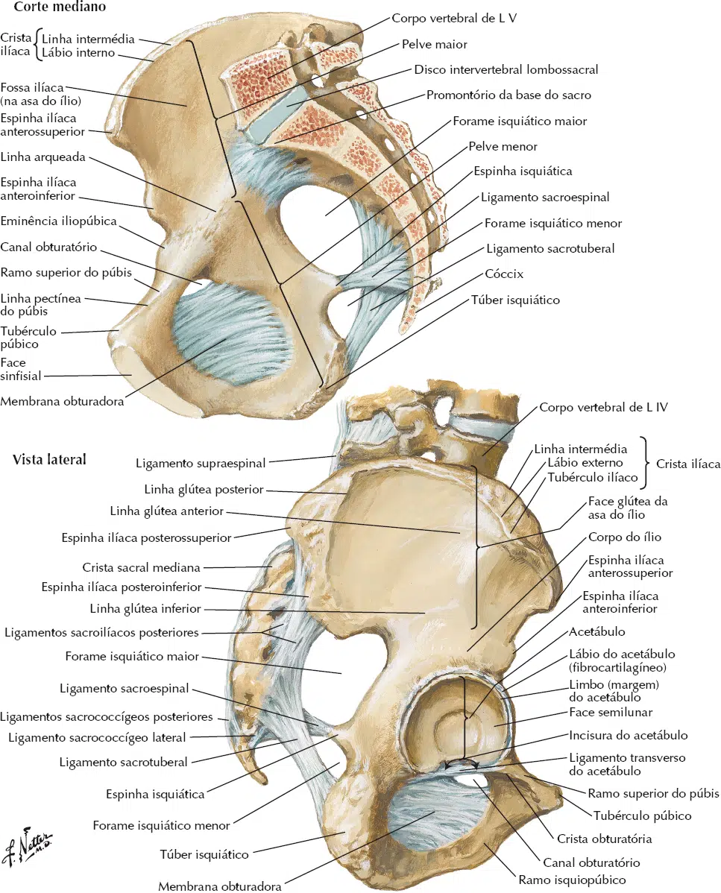
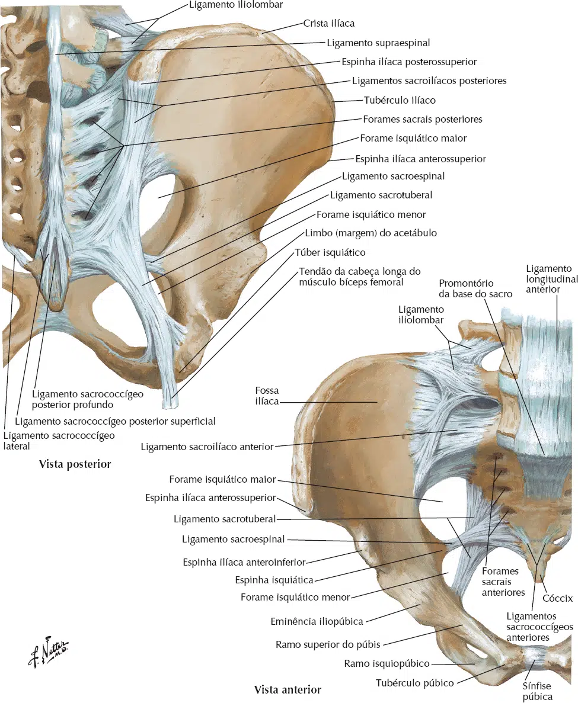

Os forames isquiáticos são aberturas localizadas na região posterior do osso do quadril, mais especificamente no osso ilíaco, que permitem a passagem de estruturas neurovasculares entre a pelve e o membro inferior.
Eles são divididos em dois:
Forame Isquiático Maior
Localização: Situa-se acima do ligamento sacroespinal e abaixo da incisura isquiática maior do osso ilíaco.
Estruturas que passam:
Nervo isquiático.
Nervo glúteo superior e inferior.
Artéria glútea superior e inferior.
Veias glúteas.
Nervo cutâneo posterior da coxa.
Nervo pudendo (que posteriormente passa pelo forame isquiático menor).
Vasos pudendos internos.

NETTER: Frank H. Netter Atlas De Anatomia Humana. 8 ed. Rio de Janeiro: Elsevier, 2024.
Forame Isquiático Menor
Localização: Formado entre o ligamento sacroespinal (inferiormente) e o ligamento sacrotuberal (superiormente), abaixo da espinha isquiática.
Estruturas que passam:
Nervo pudendo (que retorna à pelve após passar pelo forame isquiático maior).
Artéria pudenda interna.
Veia pudenda interna.
Tendão do músculo obturador interno (que sai da pelve para se inserir no trocanter maior do fêmur).

NETTER: Frank H. Netter Atlas De Anatomia Humana. 8 ed. Rio de Janeiro: Elsevier, 2024.
Relações Anatômicas Importantes
O forame isquiático maiorconecta a cavidade pélvica com a região glútea.
O forame isquiático menorpermite a comunicação entre a pelve e a região perineal.
A compressão ou inflamação nesses forames pode levar a síndromes como a ciatalgia (compressão do nervo isquiático).